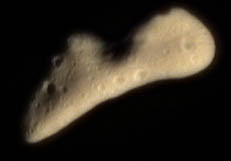
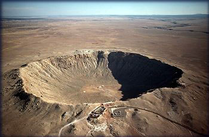
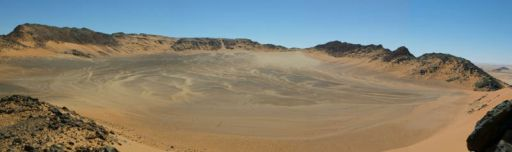
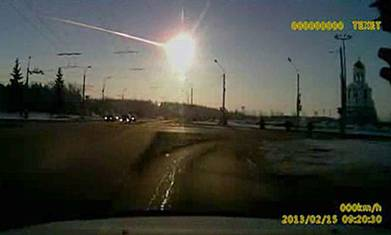
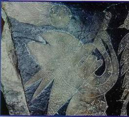
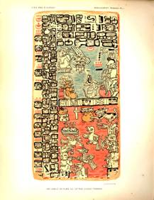

En de sterren des Hemels vielen op de aarde.
Door: Franklin ter Horst.
(Aangemaakt: maart 2001) (Laatste bewerking: 3 september 2015)
Op 12 februari 2001 meldde
de media dat de Amerikaanse robot "Near Shoemaker" een geslaagde
landing had gemaakt op de asteroïde Eros. Deze asteroïde beweegt zich met
honderden andere brokstukken voort in een brede zone tussen de planeten Mars en
Jupiter. De diameters van dit soort objecten variëren van 1 tot
Asteroïde Eros
Openbaring
6:12 En ik zag,toen Hij
het zesde zegel opende, en daar geschiedde een grote aardbeving en de zon werd
zwart als een haren zak en de maan werd geheel als bloed.
6:13 En de sterren des
hemels vielen op de aarde,gelijk een vijgenboom zijn wintervijgen laat
vallen.....(regen van meteorieten).
6:14 En de hemel week
terug als een boekrol, die wordt opgerold, en alle berg en eiland werd van zijn
plaats gerukt.
Wat hier wordt beschreven vind plaats in de tijd dat de antichrist op aarde regeert. Zelfs in vrij recente tijden zijn er heel wat kosmische brokstukken op de aarde ingeslagen.
Diablo Canon Arizona
In Arizona ligt een krater
met een middellijn van
 Krater
Egypte
Ook in het oosten van Jordanië ligt een reusachtige krater. Onderzoekers zijn tot de conclusie gekomen dat de inslag een kracht moet hebben gehad van 5000 atoombommen van het Hiroshima-type. De inslag moet enorme verwoestingen hebben aangericht in Jordanië, Irak, Syrië, Israël en het noordelijk deel van Saoedi-Arabië. In het Soemerische Gilgamesj-epos wordt gewag gemaakt van allesverwoestende stenen die uit de hemel vielen. Gilgamesj was een van de koningen van de oude Mesopotamische stad Oeroek. Volgens de Soemerische koningslijst zou hij 126 jaar over de stad hebben geregeerd tussen 2900 en 2700 v.Chr. Rond zijn persoon ontwikkelde zich het bekende Gilgamesj-epos.
“Het schreeuwde ten hemel,
en het antwoord brulde ten aarde, een bliksem lichtte, een vuur vlamde op en
bracht dood en verderf. De hel verdween en het vuur ging uit. Een gevoel van
wanhoop steeg ten hemel toen de stormgod het daglicht in duisternis veranderde,
nadat hij het land als een bord in scherven had geslagen.Alles wat door de bliksem
was neergeslagen verging tot as.
Om de duizend jaar komt er
iets naar beneden met een doorsnede van vijftig meter.Dat gebeurde nog in 1908 in Siberië bij de Toengoeska
rivier Over de inslag van deze relatief kleine asteroïde bestaan uitvoerige
en zeer betrouwbare berichten die een plastisch beeld geven van wat daar is
gebeurd. Hoe ontzagwekkend het was, blijkt uit de zakelijke schildering van de
Russische professor Koelik die in opdracht van de Academie der Wetenschappen in
Moskou ter plaatse een onderzoek instelde. ,,Op 30 juni 1908 werd om zeven
uur in de ochtend, in de omgeving van de rivier de Podkamennaja Toengoeska, een
hoeveelheid kosmische stof op de aarde geslingerd, die in uitwerking alles
overtrof. Een geluid als van de donder was tot op
De bewoners van de getroffen streek de Toengoezen vertellen dat een lichtend spoor de gehele hemel verlichte en dat een verschrikkelijke explosie een boomvormige wolk deed ontstaan die tot de hemel reikte en een onverdraaglijk wit licht uitstraalde. De nomaden dachten dat de wereld verging.
Gebouwen trilden op hun
grondvesten en duizenden
ramen vlogen aan diggelen
Op 15
februari 2013 werd de stad Chelyabinsk in het Oeral gebergte in Rusland
opgeschrikt door een meteoriet die in de atmosfeer
explodeerde. In zes regio’s
zagen mensen de lichtflits waarna een schokgolf volgde. Gebouwen trilden op hun grondvesten, duizenden
ramen vlogen aan diggelen in het koude winterweer en alarmsystemen in
auto’s begonnen spontaan te loeien. Er vielen circa 1200 gewonden waaronder
ruim 200 kinderen voornamelijk veroorzaakt door rondvliegende glasscherven.
Volgens de NASA naderde het naar schatting tien ton wegend brokstuk met een
snelheid van circa
De Russische minister Vladimir Puchkov noemde de explosie van de meteoriet een onvoorziene en buitengewone verrassing. ,,Wij beschikken nog niet over de techniek om dit soort meteorieten tijdig te traceren en er iets aan te doen.”
Feit
is dat astronomen ondanks de moderne technologie de meteoriet, niet hebben zien
aankomen. Een lokale krant in Rusland schreef op grond van een 'militaire bron'
dat de meteoriet door Russische raketten werd vernietigd maar daar is geen enkel
bewijs voor geleverd. Volgens een Russische geestelijke was de meteoriet 'een
boodschap van God’ en sommige Russen
dachten letterlijk dat het einde van de wereld was aangebroken.
Op
woensdagavond 13 november 2013 werden de bewoners van de Garo
Hills regio in Bangladesh opgeschrikt door een inslaande meteoriet. De
hemel werd plotseling verlicht en enkele seconden daarna sloeg de enorme brok
in, in een gebied vlakbij de grens met India in het district Sherpur. De dreun
was zo heftig dat hij tot op
In een oude Sanskriet-tekst staat een hymne die gewijd is aan de "Maroets "die "vlammend van kracht" "glanzend als slangen" en "schitterend als vuren" langs de hemel trekken om vervolgens verwoesting op de aarde aan te richten.
,,Uw opmars,o Maroets, schijnt schitterend, In uw vlucht werpend met stenen. Al wat leeft is bang voor de Maroets. Zelfs overdag brengen ze duisternis en mensen wankelen voort. Als ze op het hemelse pad zijn, staan ze aangespannen voor de zege. Ze zijn als dolzinnige strijdwagenmenners die op weg zijn geladen met bliksemvuur. Op uw nadering houdt elke mensenzoon zich gebukt. Gij schudt de hemel, zelfs wat stevig en onwrikbaar is wordt geschut.”
In een museum in Ica in Peru in Zuid Amerika, liggen ca 20.000 gegraveerde stenen. Deze stenen bevatten volgens Dr. Cabrera Darquea,de beheerder van deze bibliotheek,een deel van de geschiedenis van Zuid-Amerika. Op een van de stenen is een komeet te zien die zich langs de hemel voortbeweegt met een geweldige staart, terwijl de kop van de komeet door een bol wordt voorgesteld zoals de mensen van alle tijden dat hebben gedaan. Een overlevering uit die regio vertelt dat de komeet in drie delen op de aarde te pletter sloeg.
Ica steen met komeet die zich langs de
hemel voortbeweegt
Ook de Maya’s kennen een overlevering waarbij een asteroïde een enorme ramp veroorzaakt. ,,Plotseling werd de aarde getroffen door een verschrikkelijke ramp.Het begon te lichten aan de hemel en er voltrok zich een wonderlijk schouwspel. Degenen die daar een teken van komende rampspoed in zagen,vluchten weg. Er leek grind en hagel neer te komen en er leek vuur uit de hemel te vallen. Weinig mensen ontkwamen aan deze catastrofe. Wouden werden verpletterd. De duisternis kreeg de aarde in zijn greep en de sterke armen van Homen veroorzaakten geweldige aardschokken die de wereld teisterden. De aarde slingerde en kantelde en orkaanwinden zweepten langs het gehavende aangezicht van de wereld.Ontploffingen schokten de hele wereld toen de gebroken aardkorst, lava begon te spuwen. Een vreselijke hitte hing over de aarde en de zee begon te koken. Als door een wonder overleefden een aantal mensen de catastrofe. Na vele dagen van diepe duisternis, kwamen zij tevoorschijn uit hun schuilplaatsen en begonnen langzaam weer aan de wederopbouw.”
Volgens het "Troano-Manuscript" een andere Maya overlevering werden vele gebouwen tot ruines. Nadat de alles verwoestende ramp het land had getroffen was het voor lange tijd onbewoonbaar. Dit Maya-boek dat rijkelijk voorzien is van tekeningen toont ook een beeld van een tweetal meteorieten die zich als vlammende fakkels naar de aarde spoeden.
Het Troano Manuscript
De Hopi-indianen die heden ten dage nog leven in het Zuidwesten van de Verenigde Staten geloven dat deze wereld spoedig op z’n eind loopt. Dat einde zal voltooid worden na het verschijnen van een ster die zich vanuit de ruimte richting aarde spoed. De Hopi’s vertellen daar het volgende over. ,,Aan het einde der tijden, wanneer de dag der zuivering nadert en "Hoofdhakker" (de grote verdelger) zich gereed maakt om de laatste mensen te doden, zal er een kalabas met as uit de hemel neerdalen, die , als ze de grond raakt, in een grote vuurzee zal veranderen en een groot gebied verbranden zodat daar gedurende vele jaren niets meer zal kunnen leven of groeien.”
Op 21 maart 2002 raasde een
asteroïde van vijftig tot honderd meter groot langs de aarde.Dit brokstuk was
groot genoeg om een middelgrote stad op aarde te verpletteren, aldus sterrenkundige
Gareth Williams uit Boston. De asteroïde passeerde de aarde op 8 maart op een
afstand van
Op 9 juli 2002 ontdekten
astronomen een enorme rotsklomp met een omvang van
Op 4 januari 2004 zorgde een
meteoriet in grote delen van Spanje voor de nodige paniek. Even voor zonsondergang
vloog het object de dampkring boven Spanje binnen. Een enorme vuurbol met een
lange staart trok in zuidwestelijke richting door het luchtruim en was van
Het persbureau Reuters
meldde op 2 februari 2004 dat er in een dunbevolkt gebied in het noorden van
Iran een meteoriet is ingeslagen. De Iraanse radio meldde dat in het dorp Babol
in de provincie Mazandaran de bewoners in paniek de straat op waren gerend
omdat ze bang waren voor een aardbeving zoals 14 dagen daarvoor in het Iraanse
Bam plaatsvond. De inslag van de meteoriet was op tientallen kilometers afstand
te horen geweest. Ook op 2 februari 2004 vond in Peru, ten zuiden van de stad
Lima een aardbeving plaats van 3.5 op de Schaal van Richter. Geleerden die ter
plaatse een onderzoek verrichten verklaarden dat de explosie veroorzaakt moet
zijn door de inslag van een meteoriet. Getuigen vertelden dat de inslag was
voorafgegaan door een object aan de hemel. Op 18 maart 2004 vloog een asteroïde
met een diameter van
Op 31 juli 2015 verscheen het bericht dat Iran opnieuw was getroffen door meerdere brokstukken in de Iraanse provincie Quazvin.De inslagen werden vergeleken met de bovengenoemde genoemde explosie boven het Russische Chelyabinsk. Volgens Iraanse kranten ging het om een behoorlijk grote meteoriet van enkele meters groot. De brokstukken zouden op verschillende plekken terechtgekomen zijn.
Op 31 maart 2004 zagen
astronomen werkzaam bij de Linear telescoop in Sorocco ,Nieuw
Mexico een object de aarde passeren op slechts
Op 2 maart 2009 miste een
planetoïde van 47 bij
Wat momenteel één van de drukst besproken onderwerpen onder ‘eindtijdprofeten’ op internet is, is de komst van Planeet X, oftewel Nibiru of Niburu. Nibiru is een woord dat komt uit het Akkadisch en betekent "doorwaadbare plaats", "plaats van overgang" of "Veerboot". In astronomische context is het een hemellichaam. Het zou gaan om een forse planeet, een paar keer groter dan de aarde. Op honderden internetpagina's en in tientallen boeken die inmiddels over Niburu verschenen zijn is de meest gehoorde noodkreet dat zwaartekracht van deze planeet honderden vulkanen zal doen uitbarsten, reusachtige vloedgolven zullen de continenten overspoelen en de aardas zal van het ene op het andere moment omslaan zodat de poolkappen verschuiven naar de evenaar. Sommigen menen zelfs dat de aardkorst doormidden zal splijten. Alle onheilsprofeten zijn het met elkaar eens dat Niburu tenminste de aarde zal bekogelen met uit de buitenste regionen van het zonnestelsel meegesleurde meteorieten.
Het Bijbelboek Openbaring laat er geen enkele twijfel over bestaan dat de aarde in de toekomst door een asteroïde getroffen zal worden die een enorme verwoesting teweeg zal brengen. Zowel bij de opening van het eerste "zegel" als het zevende zegel is er sprake van "sterren" die de aarde teisteren;
Openbaring 8:10 En
de derde engel blies de bazuin, en er viel een grote ster, brandend als een
fakkel uit de hemel, en zij viel op het derde deel der rivieren en op de
bronnen der wateren
Matthéüs 24:29
Terstond na de verdrukking dier dagen zal de zon verduisterd worden en de maan
zal haar glans niet geven en de sterren zullen van de hemel vallen en de
machten der hemelen zullen wankelen.
De bewoners die dan nog op de aarde leven zullen een zeer fascinerend maar tevens angstaanjagend schouwspel te zien krijgen. Astronomen hebben zich inmiddels een aardig beeld kunnen vormen welk schouwspel er aan de inslag vooraf zal gaan.
Eenmaal op weg naar de aarde zal de asteroïde door de wet van de zwaartekracht steeds dichter naar de aarde getrokken worden waarbij haar snelheid voortdurend zal toenemen. Ze zal met een snelheid van ca vijftien a twintig kilometer per seconde de waterstofmantel van de aarde binnendringen. Door de wrijving die hierdoor ontstaat zal ze op zo’n vierhonderd kilometer afstand van de aarde een roodachtige gloed verspreiden en vlam vatten. Hoe meer haar hitte toeneemt des te verblindender en witter zal haar gloed worden en steeds reusachtiger het gaslint erachter. Met een lichtglans waarbij de zon verbleekt stort deze alles dodende asteroïde omlaag. Het oog dat hem aanschouwd zal voor altijd verblind zijn. De temperatuur van haar oppervlak zal de twintigduizend graden grens overschrijden en de reus een fantastisch uiterlijk geven.
Vervolgens zal zij de
stikstofmantel binnenstormen en door de laatste dikkere luchtlagen razen waardoor
de verhitting en de inwendige spanning te groot zal worden. De asteroïde zal
uit elkaar springen en een explosie veroorzaken die gelijk staat aan de kracht
van honderden waterstofbommen. Eerst vliegen de brokstukken van het buitenste
omhulsel uit elkaar en vallen als een regen van stenen op de aarde neer waar ze
een spoor van verderf achterlaten. (En de sterren des hemels vielen op de
aarde,gelijk een vijgeboom zijn wintervijgen laat vallen.Openbaring 6:13).
Vervolgens barst de kern in de onmiddellijke nabijheid van de aardbodem uiteen en valt met een donderende klap op aarde. De bodem begint te beven en zwelt aan tot grote hevigheid. En daar geschiedde een grote aardbeving Openbaring 6:12. De zon lijkt van haar plaats weggesprongen en danst als het ware aan de hemel. Een aantal brokstukken slaan met apocaliptisch geweld in op de zeebodem waardoor enorme vloedgolven ontstaan die de kustgebieden van vele landen zullen overspoelen. Het hele schouwspel zal volgens de kenners nauwelijks meer dan twee minuten duren,vanaf het eerste oplichten aan de hemel tot aan de grote paukeslag bij het neerkomen.
Terug naar: Inhoud